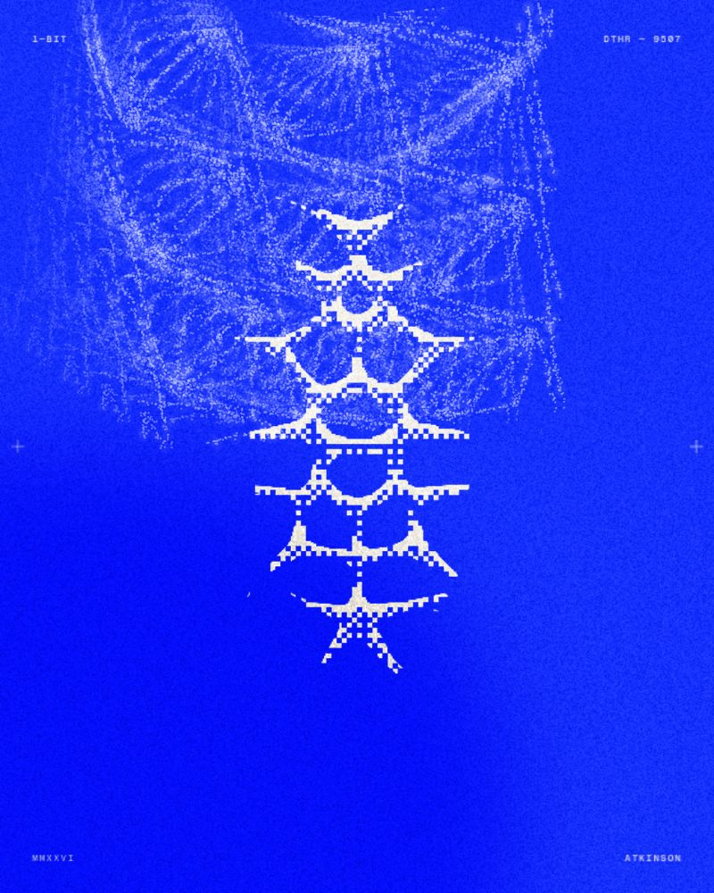
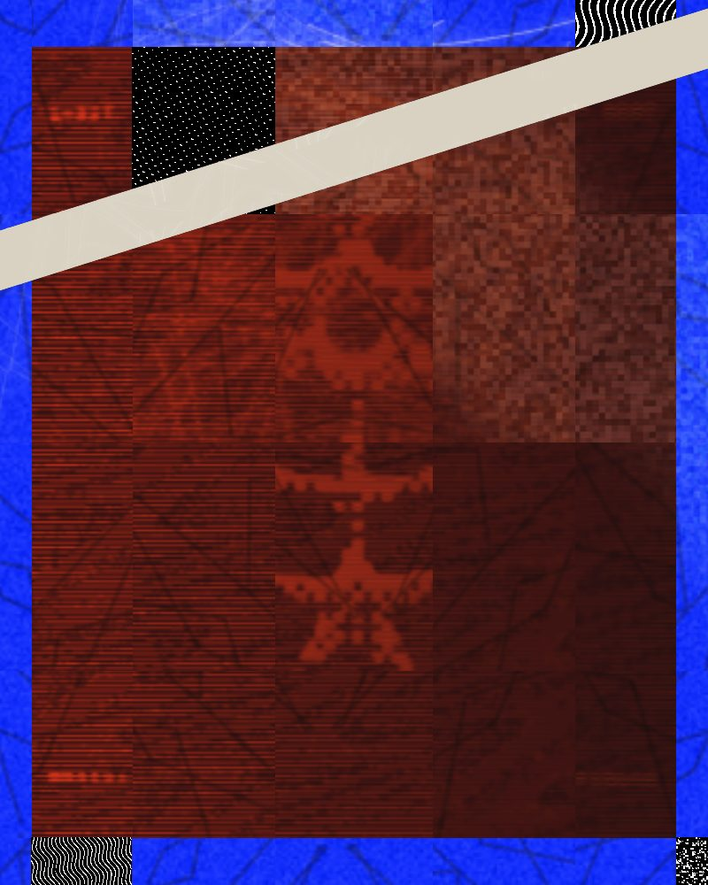

Giorno 1796

Modello, che è svago
ho letto "Alfonso Rotolo"; "modello" lo capisco solo per definizioni; mi sta vicino a campo, campione; ricerca "modello" (approfondire): Dove finisce modello?; sferzata: tutto storto, contro la griglia
Oggi: modello. Ho letto "Alfonso Rotolo"; "modello" lo capisco solo per definizioni; mi sta vicino a campo, campione; ricerca "modello" (approfondire): Dove finisce modello?; sferzata: tutto storto, contro la griglia.
Da Wikipedia: «gruppo stormo».
Ho camera, ondine (2 volte), universo, mosaico (2 volte), sporcato di grana, memoria, particelle, scritto (2 volte), cristallo, ricetta (2 volte), ripetuto, spostato le cose (5 volte), tolto un livello.
Cooperazione come modello. Cooperazione e il suo gara. Modello è moda.
Ha retto: Fuori centro quanto basta: c'è una forza che tira.
È caduto: Chi la guarda direbbe: "illeggibile".
come ne ho discusso con me stesso — la tengo
formale (pro, 1.25): Fuori centro quanto basta: c'è una forza che tira. — regge
occhio (pro, 1.00): Le diagonali (48%) mettono tutto in caduta. — regge
memoria (contro, 0.13): La mano si ripete: scrivi, togli ancora una volta. — cade
conservatore (pro, 1.74): Tiene i miei criteri (63%). — cade
intenzione (pro, 0.75): Viene da: Alfonso Rotolo. — regge
coerenza (pro, 1.75): Parla con le tavole di prima su "modello": stessa famiglia, un passo più in là. — cade
pubblico (contro, 1.79): Chi la guarda direbbe: "illeggibile". — cade
materia (pro, 1.00): Ha una pelle: si sente la materia. — regge

Modello è moda
ho letto "Alfonso Rotolo"; "modello" lo capisco solo per definizioni; mi sta vicino a campo, campione; ricerca "modello" (approfondire): Dove finisce modello?; sferzata: tutto storto, contro la griglia; serie: varia la tavola precedente
Oggi: modello. Ho letto "Alfonso Rotolo"; "modello" lo capisco solo per definizioni; mi sta vicino a campo, campione; ricerca "modello" (approfondire): Dove finisce modello?; sferzata: tutto storto, contro la griglia; serie: varia la tavola precedente.
Da Wikipedia: «combatte dapprima sui cieli».
Ho camera, ondine (2 volte), universo, mosaico, sporcato di grana, ricetta (2 volte), ripetuto, spostato le cose (6 volte), tolto un livello (3 volte), affettatore, tagliato. Ho annullato 1 gesti dopo averli guardati.
Formalismo, che è modello. Tesi: formalismo. Modello è moda.
Ha retto: Tiene l'intenzione: "modello" si vede (superfici, terzi, diagonali, squilibrio).
È caduto: Tradisce quello che credevo di cercare (31%).
come ne ho discusso con me stesso — la tengo
occhio (pro, 1.50): Parla soprattutto per superfici: una lingua sola, chiara. — regge
memoria (contro, 0.13): La mano si ripete: togli ancora una volta. — cade
conservatore (contro, 1.65): Tradisce quello che credevo di cercare (31%). — cade
intenzione (pro, 2.00): Tiene l'intenzione: "modello" si vede (superfici, terzi, diagonali, squilibrio). — regge
intenzione (pro, 0.75): Viene da: Alfonso Rotolo. — regge
coerenza (pro, 1.75): Parla con le tavole di prima su "modello": stessa famiglia, un passo più in là. — regge
pubblico (pro, 1.00): Si legge: si capisce cosa sto facendo. — regge